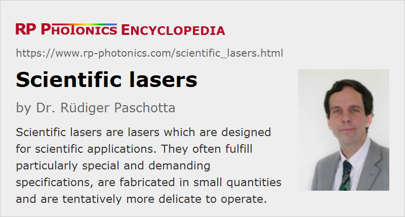

Scientific Lasers
Definition: lasers which are designed for scientific applications
More general terms: lasers
More specific terms: material processing lasers, metrology lasers
Opposite terms: industrial lasers
German: Laser für die Wissenschaft
How to cite the article; suggest additional literature
Author: Dr. Rüdiger Paschotta
Lasers are used in a wide range of applications. Some of those applications are in various areas of science – for example, in fundamental research (physics, chemistry, biology) or in areas of applied research such as atmospheric monitoring with LIDAR and the development of novel laser applications.
Compared with other fields of application, for example laser material processing in industrial applications or missile defense in the military, various aspects are often special for scientific lasers. In particular, they often need to fulfill special specifications, are available only to a limited extent from commercial suppliers, and are often more delicate to operate.
Specifications of Scientific Lasers
Scientific lasers often need to meet very special specifications (“cutting-edge performance”), sometimes even going well beyond the state of the art of industrial lasers. Some examples:
- Laser systems with small or even extremely small optical linewidth (narrow-linewidth lasers) and consequently high temporal coherence are used for spectroscopy and in various areas of optical metrology. The highest performance in that respect is required for constructing of optical clocks with extremely high timing precision.
- Some scientific applications require lasers with an unusual emission wavelength. For example, certain extreme ultraviolet wavelengths are required for certain spectroscopic measurements.
- Some scientific applications require ultrashort pulses with challenging specifications, for example concerning the pulse duration or the pulse energy and peak power. A particularly extreme example is laser fusion research, where extremely high optical intensities (orders of magnitude beyond usual intensity levels) need to be generated on a fusion target. Additional features may be required in other cases, for example precise control of the carrier–envelope offset or a minimum amount of light intensity before arrival of the actual pulse.
- In many cases, the application demands an unusual combination of specifications, such as a high output power and a small linewidth, very low intensity noise or wide wavelength tuning range. While each specification separately may not be regarded as a challenge, the combination can be difficult to obtain.
Not all scientific lasers, however, are subject to extreme demands on their performance. In some cases, the requirements are similar to those for typical industrial applications. Nevertheless, there can be other adaptations to scientific use. For example, one may gain additional flexibility for variable experimental configurations in research by providing a more sophisticated user interface of a laser controller.
Relaxed Requirements
In some respects, the demands on scientific lasers can be substantially lower than for industrial lasers:
- Particularly in cases with extreme and unusual specifications, scientific users often accept that a laser product fully meeting their needs can be obtained only after a longer development process which may involve an intense interaction between manufacturer and customer.
- Scientific lasers are usually operated in laboratories, which compared with manufacturing environments are relatively clean and expose the lasers less than elsewhere to other disturbing influences such as strong vibrations. Therefore, a somewhat less robust laser construction may be acceptable.
- The required periods of laser operation are often quite limited, while a very large number of failure-free operation hours is often demanded in industrial applications for amortizing the high cost of a laser system. Users may also accept that occasional repairs or a laser system are required, and that replacement parts are not always available at very short notice. That may not be acceptable, however, in some situations where an interruption of laser availability could have a serious negative impact on a large scientific experiment.
- It can usually be expected that scientifically well trained personnel is operating lasers in scientific laboratories. Such personal may e.g. carry out occasional alignment procedures which would be too complicated for manufacturing companies. Also, the user interface may often be somewhat more difficult to operate than for an industrial device, which must be operated without special training.
Scientific users are often willing to accept limitations of the explained types in return for exceptional performance which would otherwise not be available, or only at a massively increased cost level. However, an industrial user acquiring such a laser system may find it not to work sufficiently well for industrial use. It is thus often important that suppliers and users develop a common understanding of what exactly can be expected from a scientific laser system and what limitations need to be tolerated.
Fabrication of Scientific Lasers
Extreme specifications naturally lead to a limited availability of such lasers, particularly if at the same time the number of required devices is relatively small, so that special developments are hard to amortize. Nevertheless, various suppliers provide a range of scientific lasers or even fully specialize in that direction. While some frequently needed types of scientific lasers can be offered as standard products, others need to be fabricated in small numbers according to specifications provided by the customer. Obviously, the cost per laser unit will then be substantially higher than for standard products. Sometimes, a higher price is agreed for a small number of lasers, and a substantially lower price for further devices to be ordered later on.
Specifications for scientific lasers are not always easy to check with standard measurement equipment. A manufacturer may therefore either use particularly advanced characterization equipment or work in collaboration with a scientific customer for such purposes.
For the manufacturers, activities in the area of scientific lasers differ from those in other areas not only with respect to specifications. They also generally need to adapt to special conditions concerning the fabrication volumes, service needs and the general culture in a scientific environment. That also affects the appropriate methods of laser marketing. For such reasons, scientific lasers are often produced either by specialized manufacturers or within a separate branch of a larger laser company, including a separate management, so that the scientific laser market can be appropriately addressed.
For very special requirements, a suitable laser system may not be available at all from a commercial supplier. It can then be necessary for the scientific personnel of the laboratory to develop an own system. That may be based on a commercially available model, which is suitably modified, possibly in collaboration with the manufacturer of the original device.
Suppliers
The RP Photonics Buyer's Guide contains 16 suppliers for scientific lasers. Among them:
Questions and Comments from Users
Here you can submit questions and comments. As far as they get accepted by the author, they will appear above this paragraph together with the author’s answer. The author will decide on acceptance based on certain criteria. Essentially, the issue must be of sufficiently broad interest.
Please do not enter personal data here; we would otherwise delete it soon. (See also our privacy declaration.) If you wish to receive personal feedback or consultancy from the author, please contact him e.g. via e-mail.
By submitting the information, you give your consent to the potential publication of your inputs on our website according to our rules. (If you later retract your consent, we will delete those inputs.) As your inputs are first reviewed by the author, they may be published with some delay.
See also: lasers, laser applications, industrial lasers
and other articles in the category lasers
|  |
If you like this page, please share the link with your friends and colleagues, e.g. via social media:
These sharing buttons are implemented in a privacy-friendly way!